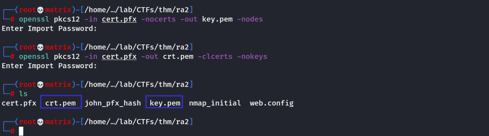

openssl
Openssl
A) Password Generation
Used for creating a linux password to be added to /etc/passwd file
openssl passwd -6 -salt xebyc my_password
Note: The number -6 represents hash algorithm
-1 : MD5
-5 : SHA-256
-6 : SHA-512 (Used by default in Linux Passwords)

Book Note

Using Custom C Program to create Password

To use it check the following:

B) Certificate Generation
We can create a public and private key with openssl using cert.pfx and the password we cracked with john.
Private Key:
openssl pkcs12 -in cert.pfx -nocerts -out key.pem -nodes
Public Key:
openssl pkcs12 -in cert.pfx -out crt.pem -clcerts -nokeys

we got the certificates.